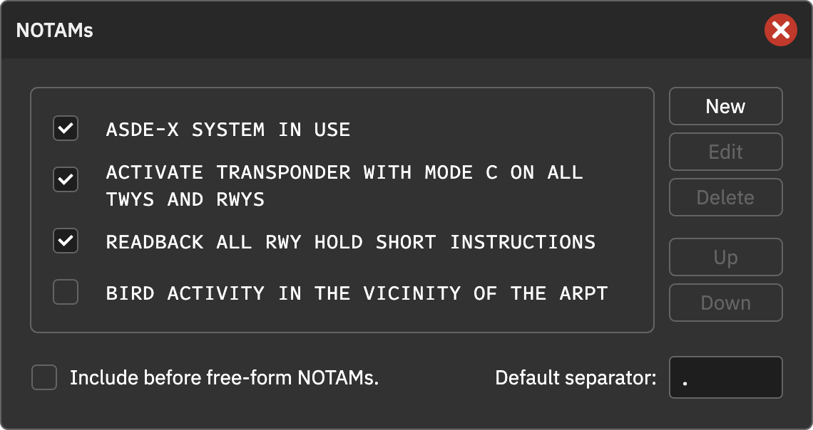
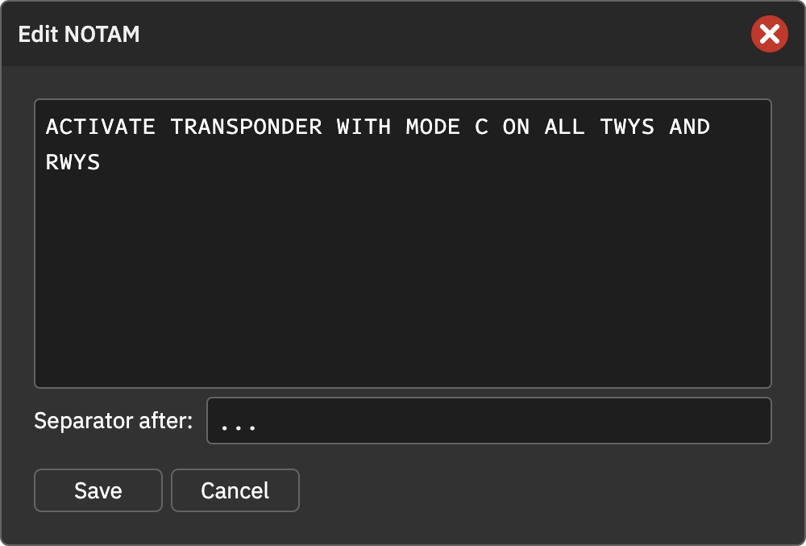

航行通告（NOTAMs）
可以在自由文本外维护常用固定通告，按需勾选启用。固定通告保存在席位内，可用于不同预设。
新建与管理
点击主窗口的 NOTAMS 标题，添加、编辑、删除消息；用 Up / Down 排序。勾选的消息按列表顺序输出。编辑时可通过 @变量名 搜索缩略语。
插入顺序
勾选 Include Before Free-form NOTAMs 后，固定消息在自由文本前，否则在后。固定消息与自由文本之间使用句号连接，再由通告格式模板包装。
分隔符
Default separator 指定固定消息间的默认分隔符，默认 .。每条消息可用 Separator after 覆盖其后分隔符，留空沿用默认，最后一条不添加该分隔符。
例如第二条后设置 ...：
ASDE-X SYSTEM IN USE. ACTIVATE TRANSPONDER WITH MODE C ON ALL TWYS AND RWYS... READBACK ALL RWY HOLD SHORT INSTRUCTIONS
空格和标点都按实际输入使用。默认状态会合并重复标点，自定义后不再自动整理；避免消息末尾与分隔符重复添加句号。
操作截图参考
以下为上游原版截图，保留英文标签。用于定位操作；品牌、登录字段与网络行为以本页 CAN 说明为准。

